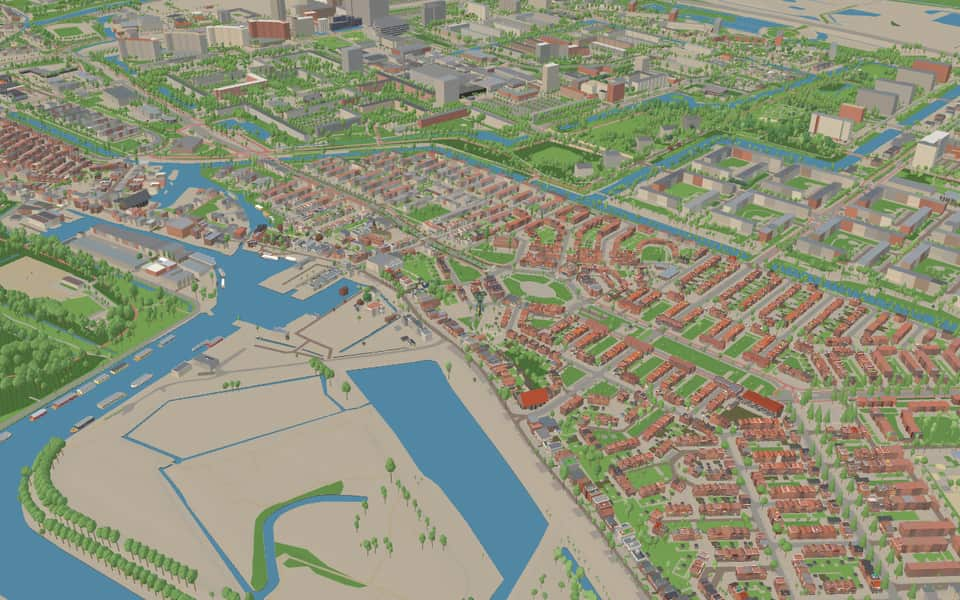
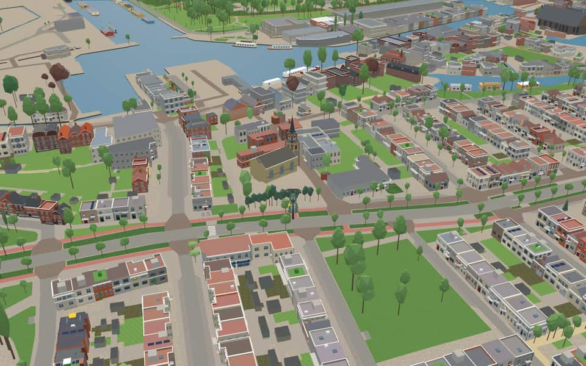
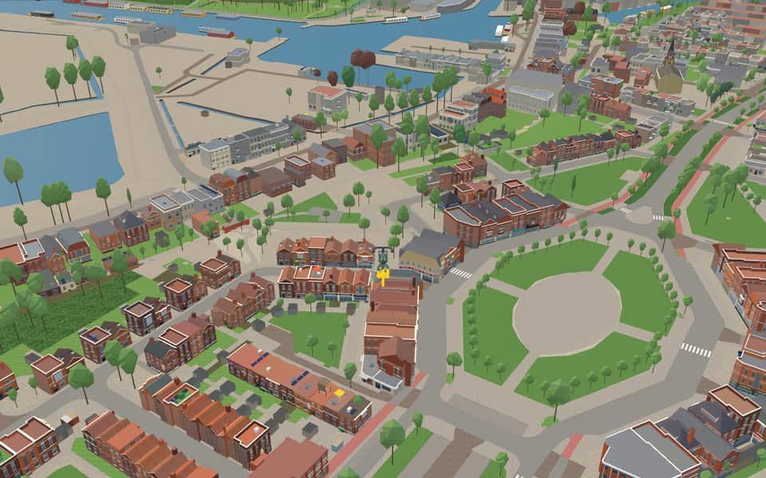

Neighbourhood · Amsterdam
Tuindorp Nieuwendam
Tuindorp Nieuwendam is a neighborhood of Amsterdam, Netherlands. The neighborhood is a 'garden village' and was developed in the 1920s. en.wikipedia.org
The name. It takes its name from the dyke village of Nieuwendam. nl.wikipedia.org
Ride Tuindorp Nieuwendam1 modelled building · 660 kit buildings · 5 facts · 51 name stories

In the game
Frames from a ride through Tuindorp Nieuwendam.


6 more photos of Tuindorp Nieuwendam

_yellow-brown_spores_and_causes_white_rot%2C_at_Amsterdam_-_panoramio.jpg){kind=link}

.jpg){kind=link}


.jpg){kind=link}

.jpg){kind=link}


Built here
Buildings modelled one by one for the ride.
Nieuwendammerkerk
Drawn from the building kit
660 buildings here use one of the game's reusable post-war building designs, fitted to their real footprint. See every design.
- Brick ground storey under a white eaves cornice at ~3.1 m, steep orange pantile roof with a long white flat-roofed dormer per house 209
- Tuindorp Nieuwendam 169
- Brown brick, upper-storey windows in a white timber band under the eaves 131
- Three small 2-light upper windows, a 2-light living-room window 111
- Red brick ground storey, low upper storey boarded in dark green timber between three white windows 40
Did you know
Trivia the ride can show you here.
- Its architecture uses a rural variant of the Amsterdam School. Wikipedia (translated from Dutch)
- NieuwendammerkerkConstruction took place between 1848 and 1849 to replace an older, smaller church. nl.wikipedia.org
- PurmerpleinMunicipal Housing Service Amsterdam directed the district's construction. nl.wikipedia.org
- PurmerpleinThe Purmerweg and Purmerplein were ready when Tuindorp Nieuwendam construction began. nl.wikipedia.org
- PurmerpleinPurmerplein acts as a break within the continuous Purmerweg route. nl.wikipedia.org
Names on the map
Where the canal, bridge and street names come from.
Canals and water
- Grote DieLiterally 'great water', to distinguish it from the Kleine Die further on. The overtoom (a place where boats were hauled over a dam) was level with the Nieuwendijk.
Streets
- AndijkstraatVillage in Noord-Holland, east of Medemblik.
- AvenhornstraatThe village of Avenhorn, north of the Beemster.
- BeemsterstraatNamed after the Beemster polder, a lake northwest of Purmerend that was drained between 1608 and 1612.
- BerkhouthofA village in Noord-Holland (near Hoorn).
- BlokkerstraatThe North Holland villages of Wester- and Oosterblokker, near Hoorn.
- Brede KerkepadThe Kerkepad is named after its position and purpose: the path from the dike village of Nieuwendam to the village church.
- DirkshornplantsoenA village south of Schagen (Noord-Holland).
- EdammerpadNamed after the Noord-Holland town (Edam).
- EdammerstraatNamed after the Noord-Holland town (Edam).
- EnkhuizerpleinThe Noord-Holland town of Enkhuizen.
- EnkhuizerstraatThe Noord-Holland town of Enkhuizen.
- GraftdijkerstraatA village in Noord-Holland between the Beemster and the Schermer.
38 more streets with a story
- Grote DiestraatLiterally 'great water', to distinguish it from the Kleine Die further on. The overtoom (a place where boats were hauled over a dam) was level with the Nieuwendijk.
- HensbroekerstraatA village in Noord-Holland, between Alkmaar and Hoorn.
- HoogwoudstraatA village in Noord-Holland.
- HoornsestraatAfter the Noord-Holland town of Hoorn, once an important Zuiderzee town, as its many monumental buildings still show.
- IlpendammerstraatA village in Waterland on the Noordhollandsch Kanaal.
- KerkepadThe Kerkepad is named after its position and purpose: the path from the dike village of Nieuwendam to the village church.
- Kleine DiestraatThe nearby waters of the Kleine Die and the Grote Die. 'Die' is a contraction of 'de' (the) and 'ie'. 'Ie' in turn is a Noord-Holland variant of 'aa', meaning water, which in Frisian-speaking areas is written 'ee'. The spelling 'IJ' is actually incorrect.
- KwadijkerstraatThe village of Kwadijk, north of Purmerend.
- MedemblikstraatA town in Noord-Holland, formerly an important Zuiderzee town.
- MiddeliestraatA village north-west of Edam (Noord-Holland).
- MolengouwAfter the mill that stood level with today's Nibbixwoudstraat, to which this street once led as a path.
- MonnikendammerplantsoenThe town in Noord-Holland, once a flourishing Zuiderzee town.
- MonnikendammerwegThe town in Noord-Holland, once a flourishing Zuiderzee town.
- NibbixwoudstraatA village between Hoorn and Medemblik (Noord-Holland).
- Nieuwe PurmerwegThe polder (the Purmer), created by draining the lake near Purmerend between 1618 and 1622.
- Nieuwe SchermerstraatA lake in Noord-Holland (the Schermer), drained between 1631 and 1635.
- NieuwendammerdijkThe part of the Waterland sea dike that lay in the former municipality of Nieuwendam until 1 January 1921. The name Nieuwendam arose when a new dike or dam was built here after a dike breach in 1516, and passed to the dike village that grew up afterwards.
- NieuwendammerstraatAfter the former village of Nieuwendam. The first part of the street came onto Amsterdam territory under the name Nieuwstraat at the annexation of 1 January 1921.
- OosthuizenstraatA village north-east of the Beemster (Noord-Holland).
- OterleekstraatA village east of Alkmaar (Noord-Holland).
- OudorperstraatThe Noord-Holland village of Oudorp.
- PurmerhofThe polder (the Purmer), created by draining the lake near Purmerend between 1618 and 1622.
- PurmerpleinThe polder (the Purmer), created by draining the lake near Purmerend between 1618 and 1622.
- PurmerwegThe polder (the Purmer), created by draining the lake near Purmerend between 1618 and 1622.
- SchermerstraatA lake in Noord-Holland (the Schermer), drained between 1631 and 1635.
- Schouwstraat't Schouw is a hamlet on the Noordhollandsch Kanaal, by Amsterdam's northern boundary.
- StompetorenstraatA village in the Schermer, near Alkmaar (Noord-Holland).
- VenhuizenstraatThe village between Hoorn and Enkhuizen (Noord-Holland).
- VolendammerwegA village south-east of Edam, known for its traditional dress.
- WatergangsewegA small village on the Noordhollandsch Kanaal, near Landsmeer.
- WervershoofstraatA village near Medemblik.
- WestwouderstraatThe village of Westwoud, between Hoorn and Enkhuizen (Noord-Holland).
- WijdenesserstraatAfter the village of Wijdenes, east of Hoorn (Noord-Holland).
- WognumerpadA village in Noord-Holland.
- WognumerplantsoenA village in Noord-Holland.
- WognumerstraatA village in Noord-Holland.
- ZwaagstraatA village in Noord-Holland, north of Hoorn.
- Zwarte PadA kind of toad (pad). The zwarte pad is black with irregular light brown blotches on its back and legs, or brown with black blotches.
2 other streets without a recorded story
Scharwouderstraat · Scheepmakerskade